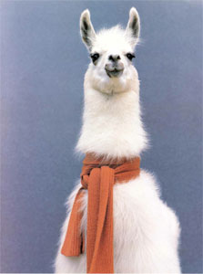

The llama (Lama glama) is a South American camelid, widely used as a pack animal by the Incas[1] and other natives of the Andes mountains. In South America llamas are still used as beasts of burden, as well as for the production of fiber and meat.[2]
The height of a full-grown, full-size llama is between 5.5 ft (1.7 m) to 6 ft (1.8 m) tall at the top of the head. They can weigh between approximately 280 lb (130 kg) and 450 lb (200 kg). At birth, a baby llama (called a cria) can weigh between 20 lb (9.1 kg) to 30 lb (14 kg). Llamas are very social animals and like to live with other llamas as a herd. Overall, the fiber produced by a llama is very soft and is naturally lanolin free. Llamas are intelligent and can learn simple tasks after a few repetitions. When using a pack, llamas can carry about 25% to 30% of their body weight for several miles.[3]
Llamas appear to have originated from the central plains of North America about 40 million years ago. They migrated to South America and Asia about 3 million years ago. By the end of the last ice age (10,000–12,000 years ago) camelids were extinct in North America.[3] As of 2007, there were over 7 million llamas and alpacas in South America and, due to importation from South America in the late 20th century, there are now over 100,000 llamas and 6,500–7,000 alpacas in the US and Canada.[4]